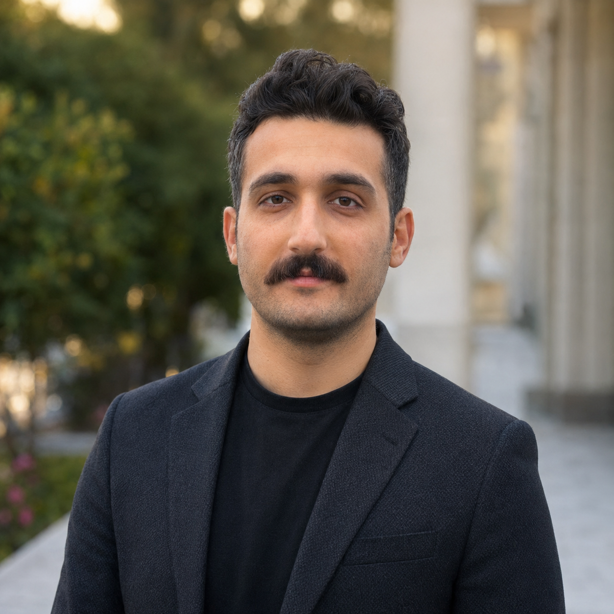

Iran University of Science and Technology (IUST)
Tehran, Iran
I am an Embedded and AI Systems Engineer with an M.Sc. in Electrical Engineering (Digital Electronic Systems) from Iran University of Science and Technology. My master’s thesis, supervised by Prof. Shahriar Baradaran Shokouhi, focused on improving lightweight object detectors in adverse weather. I build real-time computer vision pipelines and deploy deep learning models on resource-constrained embedded platforms.
Email: b.sadeghian.p@gmail.com
Research areas:
- Computer Vision
- Deep Learning
- Embedded Systems
- Signal Processing
selected publications
-
SNAA Deep Learning-Enhanced Liquid Crystal Sensor for the Rapid Discrimination of Snake VenomsSensors and Actuators A: Physical, Elsevier, 2026
-
IEEEAL-YOLO: Accurate and Lightweight Vehicle and Pedestrian Detector in Foggy Weather14th International Conference on Computer and Knowledge Engineering (ICCKE), IEEE, 2024
-
IEEECNN and ViT as Dual Teachers for Knowledge Distillation in Human Action Recognition10th International Conference on Signal Processing & Intelligent Systems (ICSPIS), IEEE, 2024